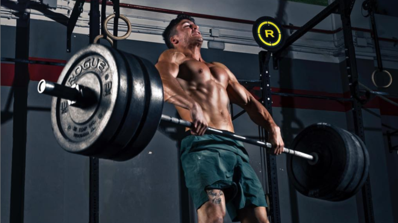

Programas
TRISKEL 60

El programa Triskel 60 es una guía de capacitación fácil de seguir para hacer más en menos tiempo. Para todos, desde principiantes hasta atletas avanzados, cada sesión se puede completar en 1 hora. Triskel 60 incluye movimientos fundamentales básicos y avanzados de CrossFit, así como diferentes niveles de rendimiento para permitir diferentes habilidades físicas y disponibilidad de equipos. No se requiere equipo especial ya que también hay una opción de peso corporal disponible. Para completar el programa, se brindan consejos para mejorar la técnica y consejos de recuperación. Como atleta, usted controla la intensidad de cada entrenamiento y existe una interacción constante y el apoyo del equipo de Triskel a través de las redes sociales, la aplicación de programación y el correo electrónico.
MASTERS

Mejora tu rendimiento atlético con nuestro programa de competencia Masters. Queremos darle a la comunidad de máster la oportunidad de llevar su entrenamiento al siguiente nivel ofreciéndoles una programación de estilo competitivo, similar a la de los atletas que siguen en Triskel Completo. Esta planificacion es para atletas de todos los niveles, mayores de 35 años, que buscan una programación personalizada. Esta pista también brindará orientación para los estudiantes de maestría que buscan participar en The CrossFit Open, Age Group Qualifiers y CrossFit Games en su grupo de edad.
PLANIFICACION ATLETA
Para los atletas más avanzados, ofrecemos programación basada en competencias que les permite entrenar como los más aptos del mundo. Este programa le permite la experiencia completa y ofrece más información sobre cómo lograr el máximo rendimiento en los niveles más altos. Cada día tendrá la posibilidad de seleccionar la opción deseada para su nivel de forma física: Nivel 3: Atletas avanzados - Sancionados/Regionales/Juegos de Crossfit Atletas Nivel 2: Intermedios/Avanzados - Atletas aspirantes a sancionados/regionales Nivel 1: Intermedio - Crossfit Atletas abiertos o entusiastas del fitness.